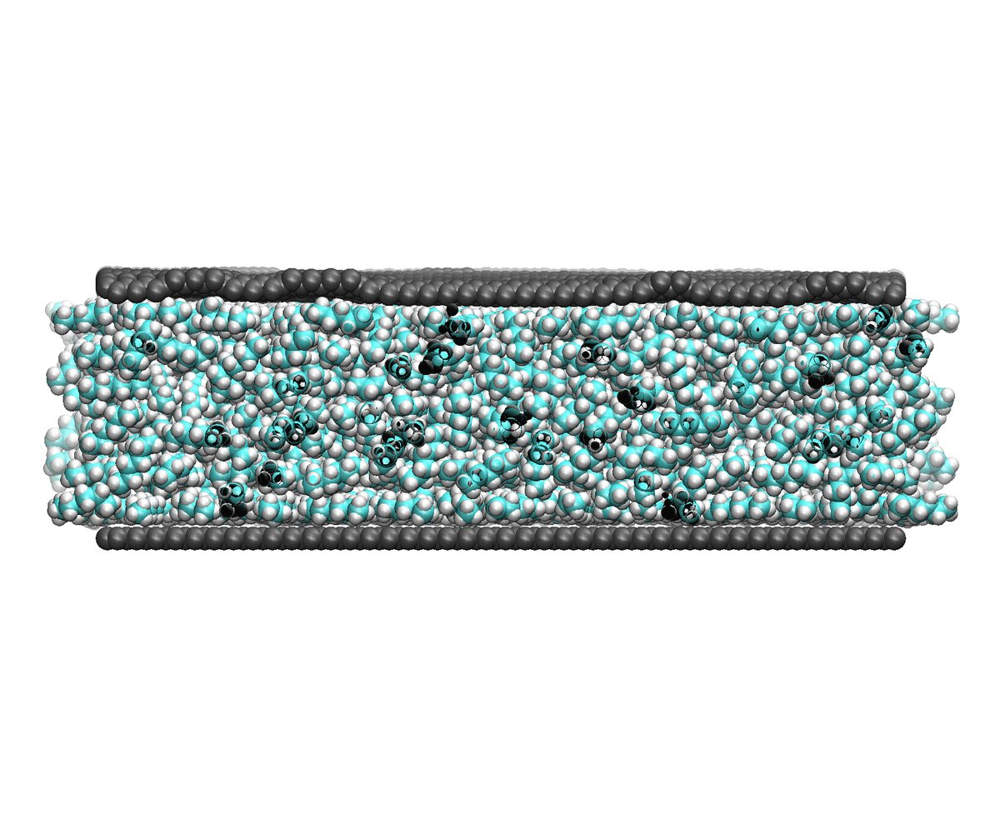
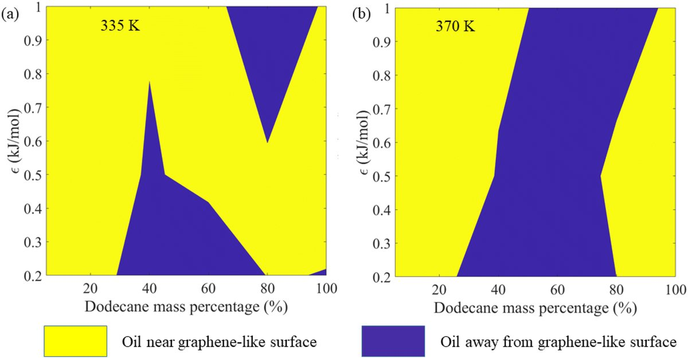

Transport control under confinement: molecular mechanisms, soft matter effects, and multiscale integration
The thesis builds a physics-driven multiscale framework that connects molecular mechanisms to system-level performance. It establishes design principles for graphene desalination membranes, shows how grafted polymers tune slip and selectivity, uncovers passive oil–water fractionation pathways, and links atomistic descriptors to device-scale predictions with physics-informed machine learning. Finally, it applies this understanding to polyacrylamide–LiCl hydrogels for passive cooling of electronics and solar panels.


Water and ion transport for desalination
Pressure-driven flow through functionalised graphene nanopores. Water structuration acts as an invisible gate, hydrophilic pores pass more water, and ion selectivity comes from hydration asymmetry: dehydration energy barriers combined with van der Waals interactions decide which ions get through.
- Coupling solute interactions with functionalized graphene membranes, Nanoscale 2022
- Mapping fluid structuration to flow enhancement in nanofluidic channels, J. Chem. Phys. 2023

Polymer-mediated nanofluidic transport
How wettability shapes polymer density layering, slip length and flow enhancement through competing enthalpy and entropy. Grafted polymer brushes reshape water at the molecular level: grafting density, chain length and channel size act as control knobs that tune flow resistance, slip and brush folding, captured in a unified descriptor.
- Wettability-modulated behaviour of polymers under nano-confinement, J. Chem. Phys. 2024
- Hydrodynamics inside brush-decorated nano-confinements, Nanoscale 2025

Passive oil–water fractionation
Multiphase transport of oil–water mixtures in nanochannels. Composition-driven segregation and wall–fluid attraction determine which phase sticks to the surface and which slips, giving a design map for separating oil spills passively, without pumps or chemicals.
- Passive fractionating mechanism for oil spill using shear-wettability modulation, Nanoscale 2024 · Cover article


Physics-informed AI for multiscale integration
A physics-informed neural network that embeds atomistic descriptors into the governing transport equations, so a few hundred MD simulations are enough for fast, interpretable predictions of electroosmotic flow in graphene nanochannels and of system-level metrics such as specific water production.
- Physics-informed ML for electroosmotic flow in graphene nanochannels, Desalination 2026
- Roughness and wettability in microchannel flows, assisted by deep learning, Phys. Fluids 2024
- ML-based façade optimisation for passive thermal management, ACM BuildSys 2022

Hydrogels for thermal management & renewable energy
Polyacrylamide–lithium chloride composite hydrogels that cool by evaporation during the day and recharge with atmospheric moisture at night. On solar panels they lower operating temperature and recover power output in rooftop tests; on high-heat-flux electronics, combined with thermoelectric modules and airflow, they cool and recover energy at the same time.
- Dual-function hydrogel for passive photovoltaic cooling, Solar RRL 2026 · Cover article
- Wind-enhanced hybrid hydrogel–thermoelectric architecture, Adv. Sustainable Syst. 2026 · Cover article
- Shape-engineered nanoparticles for electronic cooling, Numer. Heat Transfer A 2023
Beyond the thesis
Wetting, boiling & capillarity
Topography and wettability in boiling on graphene; capillary filling that defies Lucas–Washburn.
Electrolytes for energy storage
MD insight into electrolyte structure for high-voltage pseudocapacitors and Li–S batteries.
2D materials & composites
Twisted bilayer graphene, a graphene–MoSeS sandwich Ongoing, rubber–epoxy interfaces and 3D-printed anthill mechanics.
Methods & tools
Collaborations
Prof. Suman Chakraborty
- Nanofluidic flow enhancement (JCP 2023)
- Capillary filling in CNTs (JCP 2024)
- Boiling on graphene (Energy 2025)
- Ion-specific interfaces (JCIS 2026)
Dr. Debasis Ghosh
- Flexi-pseudocapacitor (Small 2024)
- Li–S batteries (Chem. Eur. J. 2025)
- MnO2 pseudocapacitor (JMCA 2026)
Prof. BoHung Kim
- Boiling over functionalized graphene (Energy 2025)
Interested in working together?I welcome collaborations that connect simulations and machine learning with experiments.
Get in touch